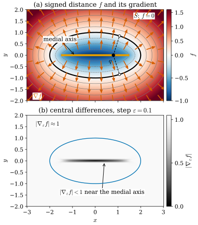
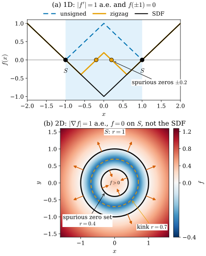

30.1 Implicit Surfaces and the Eikonal Equation
Goals
- zero level set \(S = f^{-1}(0)\)이 regular surface가 되는 조건(\(0\)이 regular value)을 말하고, 그 조건이 깨지는 예를 들며, normal을 \(\grad f/\abs{\grad f}\)로 구할 수 있다.
- signed distance function(SDF)이 \(\abs{\grad f} = 1\)을 만족하는 이유와 그것이 깨지는 곳(medial axis)을 설명하고, 거꾸로 \(\abs{\grad f} = 1\)과 \(f|_S = 0\)만으로는 SDF가 정해지지 않는다는 것을 반례로 보일 수 있다.
- eikonal loss가 강제하는 것과 강제하지 못하는 것을 구분하고, IGR의 “implicit geometric regularization”이 정확히 무엇을 주장하는지 말할 수 있다.
- VolSDF와 NeuS가 SDF를 density로 바꾸는 식을 쓰고, rendering weight의 최댓값이 surface에서 얼마나 벗어나는지 계산할 수 있다.
Prerequisites
- Section 0.3: regular surface, \(\grad f \neq 0\)인 \(f = 0\)도 regular surface라는 사실, unit normal vector(Definition 0.3.3), PCA normal의 부호 문제(Figure 0.3.4)
- Section 0.5: geodesic과 geodesic distance, fast marching과 heat method. Section 0.8: cut point
- Section 29.1: 납작한 Gaussian의 가장 짧은 축이 normal이고, 그 부호는 정해지지 않는다
- NeRF의 volume rendering [Mildenhall20]과 neural SDF의 기본 파이프라인
Motivation
Chapter 29에서 surface는 Gaussian들의 모양 속에 숨어 있었다. 납작한 Gaussian의 가장 짧은 축이 normal 역할을 했지만(Section 29.1), 그 normal은 부호가 정해지지 않았고 Gaussian이 충분히 납작할 때만 믿을 수 있었다. NeRF [Mildenhall20]의 density \(\sigma(x)\)에는 그런 단서조차 없다. density는 빛이 얼마나 흡수되는지를 잴 뿐이고, 어디가 surface인지는 말하지 않는다.
mesh, normal, 충돌 판정처럼 surface가 필요한 일을 하려면 surface를 명시적으로 표현해야 한다. 가장 흔한 방법은 surface를 함수 하나의 level set(등위집합)으로 두는 것이다.
\[ S = f^{-1}(0) = \{x \in \R^3 : f(x) = 0\}. \]
NeuS, VolSDF, Neuralangelo의 neural SDF, KinectFusion의 TSDF, marching cubes가 모두 이 표현 위에서 움직인다. 이 절은 세 질문에 답한다.
- \(f^{-1}(0)\)은 언제 surface이고, 그 normal은 무엇인가?
- signed distance function은 무엇이고, eikonal loss는 무엇을 강제하는가? 무엇을 강제하지 못하는가?
- surface 개념이 없는 NeRF의 density와 SDF를 어떻게 이어 붙이는가?
Surfaces as Zero Level Sets
함수의 zero set이 언제나 surface인 것은 아니다. 곡선 \(x^2 - y^2 = 0\)은 원점에서 두 직선이 엇갈린다. 조건은 Tour에서 본 것 그대로다(Section 0.3). \(f\)의 값이 \(0\)인 모든 점에서 gradient가 \(0\)이 아니면 된다. \(\grad f(p) = 0\)인 점을 \(f\)의 critical point(임계점), critical point에서의 값을 critical value라 하고, critical value가 아닌 값을 regular value(정칙값)라 한다.
Proposition 30.1.1 (zero level set of a regular value). \(O \subseteq \R^3\)이 open set이고 \(f\colon O \to \R\)이 smooth하며, \(f^{-1}(0)\)의 모든 점에서 \(\grad f \neq 0\)이라 하자(곧 \(0\)이 regular value다). 그러면 \(S = f^{-1}(0)\)은(비어 있지 않다면) regular surface이고, 각 \(p \in S\)에서
이다. \(\mathbf{N}\)은 \(S\) 전체에서 연속인 unit normal field이고, \(f\)가 커지는 쪽을 향한다.
정확한 진술과 증명은 Theorem 6.5.3과 Proposition 6.5.4에 있다. 증명의 핵심은 implicit function theorem(Corollary 2.4.8)이다. \(\partial_z f(p) \neq 0\)이면 \(p\) 근처의 \(f = 0\)은 \(z = g(x, y)\)라는 graph로 풀리고, graph는 regular surface다. 둘째 식은 \(S\) 위의 곡선 \(\alpha\)에서 \(f(\alpha(t)) = 0\)을 미분한 \(\inner{\grad f}{\alpha'} = 0\)에서 나온다. 곧 \(\grad f\)는 \(S\)에 수직이다.
Example 30.1.2 (one surface, two defining functions). 반지름 \(r\)인 sphere는 \(f_1 = \abs{x}^2 - r^2\)의 zero set이기도 하고 \(f_2 = \abs{x} - r\)의 zero set이기도 하다. \(\grad f_1 = 2x\)는 원점에서만 \(0\)이고 원점은 \(S\) 위에 없으므로 \(0\)은 regular value다. \(\grad f_2 = x/\abs{x}\)도 \(S\) 위에서 \(0\)이 아니다. 두 함수 모두 (30.1.1)에서 \(\mathbf{N} = x/\abs{x}\), 곧 바깥쪽 normal을 준다. 이것은 Tour의 Example 0.3.4에서 parametrization으로 구한 \(\mathbf{N} = \mathbf{x}/r\)와 같다.
일반적으로 \(S\)를 zero set으로 갖는 함수는 무수히 많다. \(\grad f \neq 0\)인 \(f\)에 어디서나 양수인 smooth function \(h\)를 곱한 \(hf\)도 같은 zero set을 갖고, \(S\) 위에서 \(\grad(hf) = h\grad f\)이므로 같은 \(\mathbf{N}\)을 준다. surface와 normal은 \(f\)의 선택에 무관하다. \(f\)의 값 자체(얼마나 빨리 커지는가)는 선택에 따라 다르다. 다음 소절의 SDF는 그 선택을 하나로 고정하는 방법이다.
Verification: verify/v-30-1-implicit-surfaces-eikonal.py
Non-example 30.1.3 (when 0 is not a regular value).
- (a) cone. \(f = x^2 + y^2 - z^2\)의 zero set은 두 겹 cone이다. \(\grad f = (2x, 2y, -2z)\)는 vertex(원점)에서 \(0\)이고, vertex에서 cone은 regular surface가 아니다(Non-example 6.5.6, Non-example 6.2.2). vertex를 빼면 regular surface다.
- (b) 두 surface가 접하는 곳. 두 sphere가 한 점에서 접할 때 각 sphere의 함수를 곱한 \(f = f_1f_2\)의 zero set은 두 sphere의 합집합이다. 접점에서는 \(f_1 = f_2 = 0\)이므로 \(\grad f = f_2\grad f_1 + f_1\grad f_2 = 0\)이다. 접점 근처의 zero set은 하나의 graph로 쓸 수 없다.
- (c) zero set은 멀쩡한데 gradient가 사라지는 경우. \(g = f^2\)는 \(f\)와 같은 zero set을 갖지만 \(\grad g = 2f\grad f\)는 \(S\) 위의 모든 점에서 \(0\)이다. \(S\)는 surface이지만 (30.1.1)로 normal을 구할 수 없다. \(S\)에서 최솟값 \(0\)을 갖는 함수는 모두 이런 문제를 가진다. 미분가능하면 최솟값이므로 \(S\) 위에서 gradient가 \(0\)이고, unsigned distance \(\abs{f}\)처럼 \(S\)에서 꺾이면 gradient가 아예 없다.
Verification: verify/v-30-1-implicit-surfaces-eikonal.py
![같은 정사각형 영역 [-2, 2]²에 그린 네 패널. (a) f = x² + y² − 1: 검은 굵은 원(zero set) 둘레에 회색 동심원(다른 level set, 안쪽은 점선)이 있고, 원 위의 8개 점에서 주홍 화살표 N = ∇f/|∇f|가 바깥쪽을 향한다. 가운데에 0 is a regular value라고 적혀 있다. (b) f = x² − y²: 검은 두 대각선이 원점에서 엇갈리고, 위아래와 좌우에 회색 hyperbola들이 있다. 원점의 주황 점에 ∇f = 0 on f = 0이라는 주석이 있다. (c) 두 원이 원점에서 접하고, 접점의 주황 점에 ∇f = 0이라는 주석이 있다. (d) g = (x² + y² − 1)²: 검은 원 안팎의 반지름 0.8과 1.2인 원 위에서 파란 화살표 0.18∇g가 원에서 멀어지는 쪽을 가리킨다. 원 안의 화살표에는 inward, 원 밖의 화살표에는 outward라고 적혀 있고, 왼쪽 위의 ∇g = 0 on g = 0이라는 주석의 화살표가 검은 원을 가리킨다. 아래 줄 패널에 x축, 왼쪽 줄 패널에 y축 이름이 있다.](figures/fig-30-1-1-level-sets.svg)
Figure 30.1.1을 (a)부터 보자. (a)의 원은 \(0\)이 regular value인 전형적인 경우다. 원 위의 여덟 점에서 그린 주홍 화살표 \(\mathbf{N} = \grad f/\abs{\grad f}\)가 모두 원에 수직이고 바깥(\(f \gt 0\)인 쪽)을 향한다. 회색 level set들은 원을 감싸는 동심원이어서, zero set 근처의 모양이 이웃 level set으로 매끄럽게 이어진다. (b)로 가면 zero set이 원점에서 X자로 엇갈린다. 원점 근처에서 이것을 하나의 함수의 graph로 쓸 수 없고, 주황 점에서 \(\grad f = 0\)이다. (c)도 같은 일이 접점에서 일어난다. 두 원은 각각 멀쩡하지만, 곱한 함수 하나로 표현하면 접점이 critical point가 된다. 3D vision에서는 얇은 물체의 두 면이 거의 닿는 곳, 두 물체가 맞닿은 곳이 이런 상황이다. (d)는 다른 종류의 실패다. zero set은 (a)와 같은 원이지만 파란 화살표가 원 안에서는 중심을, 원 밖에서는 바깥을 가리킨다. \(g \ge 0\)이고 원 위에서 최솟값 \(0\)을 가지므로 \(g\)는 원에서 멀어지는 쪽으로 커지고, 방향이 뒤집히는 원 위에서 \(\grad g = 0\)이다. 이 함수로는 normal의 방향을 알 수 없다.
Signed Distance Functions
Example 30.1.2에서 본 대로 같은 surface를 주는 \(f\)는 많다. 그 가운데 값에 기하적 뜻이 있는 것을 하나 고르자. 각 점에서 \(f\)의 값이 surface까지의 거리라면, \(f\)는 surface가 어디 있는지뿐 아니라 얼마나 떨어져 있는지도 알려 준다. sphere tracing이나 충돌 판정이 이 값을 그대로 쓴다.
Definition 30.1.4 (signed distance function). \(S\)가 bounded open set \(\Omega\)(물체의 안)의 boundary인 compact surface라 하자. 함수
를 \(S\)의 signed distance function(부호 거리 함수, SDF)라 한다. \(x\)에서 거리를 실현하는 \(S\)의 점, 곧 \(\abs{x - y} = \operatorname{dist}(x, S)\)인 \(y \in S\)를 \(x\)의 closest point라 한다.
\(S\)는 compact이므로 closest point는 언제나 하나 이상 있다(연속함수 \(y \mapsto \abs{x - y}\)의 최솟값). 그러나 하나뿐이라는 보장은 없다. closest point가 둘 이상인 점들의 모임을 \(S\)의 medial axis(중심축)라 한다. 원의 medial axis는 중심 한 점이고, sphere의 medial axis도 중심이다.
Proposition 30.1.5 (basic properties of the SDF). \(f\)가 Definition 30.1.4의 SDF이고 \(S\)가 smooth하다고 하자.
- (a) \(\abs{f(x) - f(x')} \le \abs{x - x'}\)이다(1-Lipschitz). 따라서 \(f\)가 미분가능한 점에서는 \(\abs{\grad f} \le 1\)이다.
- (b) \(p \in S\)이고 \(\mathbf{N}(p)\)가 바깥쪽 unit normal이면 충분히 작은 \(t\)에 대해 \(f(p + t\mathbf{N}(p)) = t\)이다.
- (c) \(f\)가 미분가능한 점 \(x \notin S\)에서는 closest point \(y\)가 하나뿐이고 \(\grad f(x) = \pm(x - y)/\abs{x - y}\)(바깥에서 \(+\), 안에서 \(-\)), 특히 \(\abs{\grad f(x)} = 1\)이다. \(S\) 위에서는 \(\grad f(p) = \mathbf{N}(p)\)이다.
- (d) closest point가 둘 이상인 점, 곧 medial axis 위의 점에서는 \(f\)가 미분가능하지 않다.
정리하면 \(f\)는 medial axis의 closure 밖에서 smooth하고 그곳에서 \(\abs{\grad f} = 1\)이다. 특히 \(S\)의 충분히 가는 neighborhood에서 \(f\)는 smooth하다(이 smoothness는 이 study set에서 증명하지 않는다).
Derivation. (a) \(y\)가 \(x'\)의 closest point이면 \(\operatorname{dist}(x, S) \le \abs{x - y} \le \abs{x - x'} + \operatorname{dist}(x', S)\)이고, \(x\)와 \(x'\)을 바꿔도 같다. \(x\)와 \(x'\)이 \(S\)의 서로 다른 쪽에 있으면 둘을 잇는 선분이 \(S\)와 만나는 점을 거쳐 같은 부등식을 얻는다. (b) \(S\)가 smooth하면 \(p\)를 지나는 normal 직선 위의 가까운 점은 \(p\)를 closest point로 가진다(Example 30.1.6에서 이것이 얼마나 멀리까지 성립하는지 본다). 그러므로 \(f\)는 normal 방향으로 기울기 1로 변한다. (c) 바깥의 점 \(x\)에서 closest point \(y\)를 향해 가는 선분 위에서 \(\operatorname{dist}(\cdot, S)\)는 간 거리만큼 정확히 줄어든다. 곧 unit vector \(e = (y - x)/\abs{y - x}\) 방향의 directional derivative가 \(\inner{\grad f(x)}{e} = -1\)이다. (a)에 의해 \(\abs{\grad f} \le 1\)이므로 Cauchy–Schwarz 부등식의 등호 조건에서 \(\grad f(x) = -e = (x - y)/\abs{x - y}\)이다. 안의 점에서는 \(f = -\operatorname{dist}\)이므로 부호가 바뀌어 \(\grad f(x) = e\), 곧 closest point를 향한다. closest point가 둘(\(y_1 \ne y_2\))이면 같은 논증으로 \(\grad f(x)\)가 서로 다른 두 unit vector \(\mp e_1\)과 \(\mp e_2\)에 동시에 같아야 하므로 모순이다. 이것이 (d)다.
Example 30.1.6 (sphere and ellipse). 반지름 \(r\)인 sphere의 SDF는 \(f = \abs{x} - r\)이다. \(\grad f = x/\abs{x}\)이므로 원점을 뺀 모든 곳에서 \(\abs{\grad f} = 1\)이고, \(S\) 위에서 \(\grad f = \mathbf{N}\)(바깥쪽)이다. 원점은 모든 점이 closest point인 점, 곧 medial axis이고 \(f\)는 거기서 cone 모양으로 꺾인다.
평면의 ellipse \(x^2/a^2 + y^2/b^2 = 1\) (\(a = 2\), \(b = 1\))의 SDF는 닫힌 식이 없으므로 closest point를 수치로 찾아 계산한다(Figure 30.1.2). medial axis는 장축 위의 선분 \(\{\abs{x} \le (a^2 - b^2)/a = 1.5,\ y = 0\}\)이다. 끝점 \((\pm 1.5, 0)\)은 vertex \((\pm 2, 0)\)에서 curvature가 가장 큰 곳의 center of curvature(반지름 \(b^2/a = 0.5\))다. 예를 들어 \(q = (0.8, 0)\)에서는 \((1.067, \pm 0.846)\) 두 점이 똑같이 \(0.887\)만큼 떨어져 있다. 선분 밖의 \((1.7, 0)\)은 closest point가 vertex \((2, 0)\) 하나뿐이고 \(f = -0.3\)이다. 짧은 축 위에서는 \(f(0, y) = \abs{y} - 1\)이어서 \(y = 0\)(medial axis와 만나는 곳)에서 꺾인다.
Verification: verify/v-30-1-implicit-surfaces-eikonal.py

Figure 30.1.2의 (a)를 보자. 주홍 화살표는 \(S\) 위에서 바깥쪽 normal이고, \(S\)를 떠나서도 각 점의 closest point를 지나는 normal 직선을 따라 바깥 쪽을 가리킨다. 바깥에서는 closest point에서 곧게 뻗어 나오고, 안에서는 closest point를 향해 간다. SDF의 gradient field는 normal field를 공간 전체로 늘인 것이다. 그런데 ellipse 안쪽 장축에서는 위의 점과 아래의 점이 정반대 방향의 화살표를 가진다. 위의 점은 위쪽 boundary를, 아래의 점은 아래쪽 boundary를 향하기 때문이다. 점 \(q\)가 바로 그 경계에 있고, 두 점선이 보여 주듯이 위와 아래에 똑같이 가까운 점이 하나씩 있다. 이 선분 위에서 \(f\)는 지붕처럼 꺾인다. (b)는 이것을 수치로 본다. Neuralangelo처럼 SDF의 gradient를 간격 \(\varepsilon\)의 finite difference로 계산하면(Section 30.2), \(S\) 근처에서는 \(\abs{\nabla_\varepsilon f}\)가 1이지만 medial axis를 가로지르는 띠에서는 양쪽 기울기가 상쇄되어 1보다 작아진다. \(f\)는 거기서 eikonal equation을 만족하지 않는다.
The Eikonal Equation Does Not Determine the SDF
Proposition 30.1.5에 의해 SDF는 medial axis 밖에서
을 만족한다. 이 PDE를 eikonal equation(아이코날 방정식)이라 한다. 거꾸로, (30.1.3)을 만족하면 SDF인가? 그렇지 않다. 이것이 이 절의 가장 중요한 관찰이다.

0이라고 적혀 있다.">Figure 30.1.3의 (a)에서 세 그래프를 비교해 보자. 셋 다 꺾이는 점을 빼면 기울기가 정확히 \(\pm 1\)이고 \(S = \{\pm 1\}\)에서 \(0\)이다. 주황 zigzag는 물체 안쪽에서 한 번 더 위로 꺾여 \(x = \pm 0.2\)에서 가로축을 지난다. 이 함수의 zero set은 \(S\)보다 크다. (b)는 같은 일을 2차원에서 본 것이다. 바깥 검은 원은 진짜 \(S\)이고 주홍 화살표가 바깥을 향한다. 안쪽 검은 원 \(r = 0.4\)은 가짜 zero set인데, 화살표가 원점을 향하므로 이 원의 안쪽이 “밖”이다. marching cubes(Section 30.2)로 이 함수에서 mesh를 꺼내면 물체 안에 작은 구멍 surface가 하나 더 나온다.
그러면 SDF를 다른 해들과 구별하는 성질은 무엇인가? 꺾이는 점의 모양이다. SDF는 \(S\)에서 멀어질수록 커지는 거리이므로, 꺾인다면 medial axis에서 꺾이고 꺾이는 방향이 정해져 있다. 이 선택 규칙을 정식화한 것이 Crandall과 Lions의 viscosity solution(점성해)이다 [Crandall83]. bounded open set \(\Omega\)에서 boundary까지의 거리 \(u(x) = \operatorname{dist}(x, \partial\Omega)\)는 \(\abs{\grad u} - 1 = 0\) (in \(\Omega\)), \(u|_{\partial\Omega} = 0\)의 유일한 viscosity solution이다. 안에서 음수인 SDF는 그 부호를 바꾼 \(-u\)이고, 같은 식을 \(1 - \abs{\grad u} = 0\)으로 쓸 때의 viscosity solution이다. viscosity solution의 정의는 식을 쓰는 부호에 민감하다. 정의를 한 줄로 쓰기는 어렵지만 1차원에서는 직접 확인할 수 있다.
Derivation. \(\Omega = (-1, 1)\), \(\mathcal{H}(p) = \abs{p} - 1\)이라 하자. 연속함수 \(u\)가 \(\mathcal{H}(u') = 0\)의 viscosity solution이라는 것은 모든 \(x_0 \in \Omega\)에서 다음 두 조건이 성립한다는 뜻이다. (i) smooth function \(\psi\)가 \(x_0\)에서 \(u\)에 위에서 닿으면(\(x_0\) 근처에서 \(\psi \ge u\)이고 \(\psi(x_0) = u(x_0)\)) \(\mathcal{H}(\psi'(x_0)) \le 0\)이다. (ii) 아래에서 닿으면 \(\mathcal{H}(\psi'(x_0)) \ge 0\)이다. \(u\)가 미분가능한 점에서는 둘 다 \(\mathcal{H}(u') = 0\)이 된다. 꺾이는 점에서만 차이가 생긴다.
\(u = 1 - \abs{x}\)는 \(x_0 = 0\)에서 \(\wedge\)로 꺾인다. 위에서 닿는 \(\psi\)의 기울기는 \([-1, 1]\) 안에 있으므로 \(\abs{\psi'(0)} - 1 \le 0\)이고 (i)을 만족한다. 아래에서 닿는 smooth function은 없으므로(왼쪽에서는 \(\psi'(0) \ge 1\), 오른쪽에서는 \(\psi'(0) \le -1\)이어야 한다) (ii)는 확인할 것이 없다. 반대로 \(\abs{x} - 1\)은 \(0\)에서 \(\vee\)로 꺾이고, 상수 \(\psi \equiv -1\)이 아래에서 닿아 \(\mathcal{H}(0) = -1 \lt 0\)이 되므로 (ii)를 어긴다. zigzag는 \(x = \pm 0.6\)에서 \(\vee\)로 꺾이므로 역시 viscosity solution이 아니다. 세 후보 가운데 distance function \(1 - \abs{x}\)만 남는다(모든 연속함수 가운데 유일하다는 것은 [Crandall83]의 정리다). 부호를 바꾼 식 \(1 - \abs{u'} = 0\)에서는 \(\wedge\)와 \(\vee\)의 역할이 바뀌어 SDF \(\abs{x} - 1\)이 해이고, zigzag는 \(x = 0\)의 \(\wedge\) 때문에 여전히 해가 아니다.
neural SDF는 이 PDE를 풀지 않는다. 대신 IGR [Gropp20]은 점 \(x_i \in S\)(와 있으면 normal \(n_i\))에 맞추는 항 \(\ell_X\)에 벌점을 더한 loss를 network \(f\)의 parameter에 대해 최소화한다.
마지막 항이 eikonal loss다. 논문은 \(\lambda = 0.1\), \(\tau = 1\)을 쓰고, \(\mathcal{D}\)를 uniform distribution(공식 코드는 cube \([-1.8, 1.8]^3\))과 각 \(x_i\)를 중심으로 한 Gaussian들(표준편차는 \(50\)번째로 가까운 이웃까지의 거리)의 평균으로 둔다. 같은 항이 NeuS(weight \(0.1\), 반지름 \(1.2\)인 공 안의 ray sample에서), VolSDF(weight \(0.1\), bounding sphere에 외접하는 cube의 uniform sample과 ray 위의 sample에서), Neuralangelo(weight \(0.1\), ray sample에서)의 공식 코드에 들어 있다.
IGR 논문은 이 문제가 ill-posed라는 것을 스스로 밝힌다. 유한한 점들 \(x_i\)에서만 \(f = 0\)을 요구하므로, 그 점들을 지나는 거의 어떤 closed surface에 대해서도 그 SDF가 loss의 최솟값이다. 논문의 주장(제목의 implicit geometric regularization)은 최적화 과정이 그 많은 해 가운데 그럴듯한 것을 고른다는 관찰이다. 이 주장의 근거가 되는 정리는 linear model \(f(x) = w^{\mathsf T}x\)에 대한 것이다. 점들이 원점을 지나는 hyperplane \(\Pi\) 근처에 있으면(제곱 오차와 \((\abs{w}^2 - 1)^2\) 꼴의 벌점을 쓴 경우), \(\lambda\)가 충분히 크면 loss의 global minimum은 \(\Pi\)의 두 SDF \(\pm\)(근사)뿐이고 나머지 critical point는 saddle 또는 local maximum이며, 작은 step size의 gradient descent는 무작위 초기값에서 확률 1로 그 둘 가운데 하나에 수렴한다. 곧 평면은 정확히 재현된다(plane reproduction). MLP에 대한 것은 실험적 관찰이다.
From Distance to Density: VolSDF and NeuS
NeRF는 surface 대신 density \(\sigma(x) \ge 0\)를 배운다. ray \(x(t) = o + tv\) (\(\abs{v} = 1\)) 위의 transmittance와 weight는
이고, 색은 \(\int w(t)\,c(t)\,dt\)다 [Mildenhall20]. 여기에는 surface라는 개념이 없다. density의 어떤 level set을 surface로 볼지 정하는 기준이 없고, 반투명한 구름도 유효한 답이다. VolSDF와 NeuS는 \(\sigma\)를 SDF \(f\)의 함수로 만들어 surface를 \(f = 0\)으로 못 박는다.
VolSDF. Laplace distribution(평균 \(0\), scale \(\beta\))의 CDF \(\Psi_\beta\)로
로 둔다 [Yariv21]. 논문의 SDF는 \(\Omega\)(물체) 안에서 음수이므로 이 장의 부호와 같다. 구현에서는 \(\alpha = 1/\beta\)로 두고 \(\beta\)만 학습한다(공식 코드 code/model/density.py의 LaplaceDensity). \(\beta \to 0\)이면 \(\sigma\)는 물체 안에서 \(\alpha\), 밖에서 \(0\)인 indicator function에 다가간다. 곧 물체는 밀도 \(\alpha\)인 균일한 덩어리이고, 그 가장자리를 \(\beta\)만큼 흐리게 한 것이다.
NeuS. logistic function \(\Phi_s(x) = (1 + e^{-sx})^{-1}\)과 그 도함수 \(\varphi_s = \Phi_s'\)(logistic density)를 쓴다 [Wang21]. 논문은 \(1/s\)를 \(\varphi_s\)의 표준편차라 부르지만, 정확히는 \(1/s\)가 scale이고 표준편차는 \(\pi/(\sqrt3\,s) \approx 1.81/s\)다. 이 절의 bias 계산에는 어느 쪽이든 \(1/s\)에 비례한다는 것만 쓰인다. 가장 단순한 선택 \(\sigma = \varphi_s(f)\)는 surface에서 density가 가장 크지만, weight의 최댓값이 surface 앞으로 당겨진다(아래 Figure 30.1.4). NeuS는 거꾸로 “평면을 만나는 ray의 weight가 \(\varphi_s(f)\)에 비례해 surface에서 최대가 되도록” density를 정한다. 그 결과가 opaque density
이다. 이산화하면 sample 구간의 opacity가 \(\alpha_i = \max\big((\Phi_s(f_i) - \Phi_s(f_{i+1}))/\Phi_s(f_i),\ 0\big)\)이 되고, 공식 코드(models/renderer.py)는 이것을 구간 양 끝의 SDF를 \(\grad f\)와 ray 방향의 cosine으로 추정해 계산한다. \(s\)는 학습되는 값이고(코드에서는 \(s = e^{10\,v}\), \(v\)의 초기값 \(0.3\)이므로 처음에 \(s \approx 20.1\)), 학습이 진행되면 커져 density가 surface에 집중된다.
ray가 평면을 각 \(\theta\)(ray와 normal 사이)로 지나는 경우를 계산해 보자. \(f(x(t)) = -\abs{\cos\theta}\,(t - t^*)\)이므로 \(\frac{d}{dt}\Phi_s(f) = -\abs{\cos\theta}\,\varphi_s(f)\)이고, \(\varphi_s = s\,\Phi_s(1 - \Phi_s)\)와 \(1 - \Phi_s(f) = \Phi_s(-f)\)를 쓰면
이다. \(T\)는 \(\frac{d}{dt}\log T = -\rho = \frac{d}{dt}\log\Phi_s(f)\)에서 나온다. \(w\)는 \(f = 0\), 곧 \(t = t^*\)에서 정확히 최대다. 이것이 NeuS 논문의 Theorem 1(1차 근사에서 unbiased)이 말하는 것이다.
![위아래 두 패널. (a) 가로축 signed distance f(-0.5부터 0.5), 세로축 density. 왼쪽 절반(f < 0, inside)이 하늘색이다. 파란 실선(VolSDF)과 주황 실선(NeuS)은 왼쪽에서 10에 붙어 있다가 f = 0에서 5를 지나 오른쪽에서 0으로 떨어지고, 파랑이 주황보다 가파르다. 회색 점선(naive)은 f = 0에서 꼭대기 2.5인 종 모양이다. (b) 가로축 ray parameter t(0.6부터 1.4), 세로축 weight. t = 1에 검은 세로선 surface t*가 있고, 그 오른쪽(물체 안, inside f < 0)이 하늘색이다. 왼쪽 위에 오른쪽을 향한 화살표와 ray from camera라는 글자가 있다. 회색 점선(naive)은 0.952 근처에서 높이 약 1.6의 꼭대기, 주황(NeuS)은 정확히 1에서 높이 약 2.5의 꼭대기, 파랑(VolSDF)은 1.027에서 높이 약 3.2의 꼭대기를 가진다. -0.048과 +0.027이라는 주석이 꼭대기의 어긋남을 가리킨다.](figures/fig-30-1-4-sdf-to-density.svg)
Figure 30.1.4의 (a)에서 파랑과 주황은 거의 같은 모양이다. 둘 다 물체 안쪽(하늘색)에서 일정한 값 10을 갖고, surface에서 정확히 그 절반을 지나 밖에서 \(0\)으로 떨어진다. 회색 점선만 다르다. naive \(\varphi_s(f)\)는 surface 위에서만 큰 얇은 껍질이다. (b)로 내려가 ray 위의 weight를 보면 차이가 드러난다. 여기서는 가로축이 ray를 따라 카메라에서 멀어지는 방향이라 물체 안(하늘색)이 오른쪽에 있다. 회색 점선의 꼭대기는 검은 세로선(surface)보다 왼쪽, 곧 카메라 쪽에 있다. ray가 껍질을 지나는 동안 transmittance \(T\)가 줄어들어 껍질의 뒤쪽 절반이 덜 보이기 때문이다. 주황 NeuS는 이 감소를 정확히 보정하도록 만든 것이라 꼭대기가 surface에 있다. 파랑 VolSDF의 꼭대기는 surface보다 약간 오른쪽, 물체 안쪽에 있다.
TSDF Fusion and the Level Set Method
neural SDF 이전에도 SDF는 depth sensor의 표준 표현이었다. Curless와 Levoy [Curless96]는 range image마다 sensor의 시선(line of sight)을 따라 잰 signed distance \(d_i(x)\)와 weight \(w_i(x)\)를 voxel grid에 쌓고, 누적값을
로 갱신한다. 거리와 weight는 측정된 surface 근처에서만 쓰도록 잘라낸다(truncation). 그래서 TSDF(truncated SDF)라 부른다. surface는 \(D = 0\)인 zero set이고, 논문은 이 zero set이 시선 방향 거리에 대한 최소제곱의 뜻에서 최적이라는 것을 부록에서 스케치로 보이고, marching cubes로 mesh를 꺼낸다(Section 30.2). KinectFusion [Newcombe11]은 같은 누적을 GPU에서 실시간으로 하면서, TSDF에서 ray casting한 surface에 새 depth를 맞춰 카메라를 추적한다. 2DGS [Huang24]도 학습이 끝난 뒤 rendering한 depth map들을 이렇게 fusion해 mesh를 얻는다(Section 30.3).
시선을 따라 잰 거리는 Euclidean distance가 아니다. surface가 시선과 비스듬하면 시선을 따라 잰 거리가 더 길다. 평면을 normal과 각 \(\theta\)를 이루는 시선으로 보면 그 거리는 Euclidean distance의 \(1/\cos\theta\)배이고, 그 gradient의 크기도 \(1/\cos\theta\)다(Exercise 30.1.4). TSDF는 eikonal equation을 만족하지 않는다. 그래도 zero set은 같으므로 surface를 꺼내는 데는 문제가 없다. TSDF에서 중요한 것은 값이 아니라 zero crossing이다.
마지막으로, surface를 \(f\)의 zero level set으로 두고 \(f\)를 시간에 따라 PDE로 움직여 surface를 움직이는 방법을 level set method라 한다 [Osher88]. surface가 갈라지거나 합쳐져도 \(f\)는 여전히 함수 하나로 남는다는 것이 장점이다.
Distance in Space versus Distance on the Surface
SDF가 재는 거리는 \(\R^3\)의 직선 거리다. 공중을 가로질러 surface까지 잰다. Tour Section 0.5의 geodesic distance는 다르다. surface 위의 두 점 사이를 surface 안에서만 움직여 잰 가장 짧은 길이다. 두 점 \(p, q \in S\)에 대해 \(\abs{p - q}\)는 언제나 geodesic distance 이하이고, 둘은 아주 다를 수 있다. unit sphere의 대척점은 직선으로 \(2\), surface 위로 \(\pi\)만큼 떨어져 있다(Exercise 30.1.5).
그래도 둘은 같은 PDE의 해다. 한 점 \(p \in S\)에서의 geodesic distance \(u\)는 \(S\) 위에서 \(\abs{\grad_S u} = 1\), \(u(p) = 0\)을 만족한다. 여기서 \(\grad_S\)는 first fundamental form으로 정한 surface 위의 gradient다. Tour에서 본 fast marching과 heat method(Section 0.5의 In computer vision 상자)가 mesh 위에서 푸는 것이 이 surface 위의 eikonal equation이다. SDF는 같은 식을 \(\R^3\)에서 \(S\) 전체를 출발 집합으로 두고 푼 것이다. 매끄럽지 않은 곳도 대응한다. SDF는 medial axis에서, geodesic distance는 cut locus(최단 geodesic이 갈라지는 점들, 예를 들어 sphere에서 \(p\)의 대척점)에서 꺾인다.
Summary
- \(0\)이 regular value이면 \(S = f^{-1}(0)\)은 regular surface이고, \(\mathbf{N} = \grad f/\abs{\grad f}\)는 \(f\)가 커지는 쪽을 향하는 연속인 unit normal field다. cone의 vertex, 두 surface의 접점, \(f^2\) 같은 함수에서는 이것이 깨진다. implicit surface의 normal은 부호까지 정해진다.
- SDF는 1-Lipschitz이고, closest point가 하나인 곳에서 \(\abs{\grad f} = 1\), \(S\) 위에서 \(\grad f = \mathbf{N}\)이다. closest point가 둘 이상인 medial axis에서는 미분가능하지 않다.
- eikonal equation \(\abs{\grad f} = 1\), \(f|_S = 0\)은 해가 많다. 부호가 틀린 해, 가짜 zero set을 가진 해가 있다. distance function은 그 가운데 viscosity solution으로 골라진다. eikonal loss는 \(\abs{\grad f} \approx 1\)만 강제하고, smooth한 network는 안쪽에서 반드시 \(\grad f = 0\)인 점을 가진다.
- VolSDF의 \(\tfrac1\beta\Psi_\beta(-f)\)와 NeuS의 opaque density(평면에서 \(s\abs{\cos\theta}\Phi_s(-f)\))는 같은 꼴이다. 평면을 정면으로 볼 때 weight의 최댓값은 NeuS에서 surface에 있고 VolSDF에서 \(0.27\beta\)만큼 안쪽에 있다.
- TSDF는 시선을 따라 잰 거리라 eikonal equation을 만족하지 않지만 zero set은 같다. SDF는 공간 속 거리이고, geodesic distance는 같은 eikonal equation을 surface 위에서 푼 것이다.
다음 절에서는 \(f\)의 2차 미분을 본다. \(\mathbf{N} = \grad f/\abs{\grad f}\)를 한 번 더 미분하면 shape operator가 나오고, SDF에서는 Hessian matrix의 eigenvalue가 곧 principal curvature다. 그래서 \(\Delta f\)는 mean curvature를 재고, Neuralangelo의 curvature loss가 무엇을 벌하는지 정확히 말할 수 있다.
Quick check
Exercise 30.1.1 ★ \(f_c(x, y, z) = x^2 + y^2 - z^2 + c\)라 하자. \(0\)이 \(f_c\)의 regular value인 \(c\)를 모두 구하고, \(c \gt 0\), \(c = 0\), \(c \lt 0\)일 때 \(f_c^{-1}(0)\)이 각각 어떤 surface인지 말하여라.
Solution
\(\grad f_c = (2x, 2y, -2z)\)는 원점에서만 \(0\)이고, 원점에서의 값은 \(f_c(0) = c\)이다. 따라서 원점이 zero set 위에 있는 것은 \(c = 0\)일 때뿐이고, \(0\)이 regular value인 것은 \(c \neq 0\)일 때다. \(c \gt 0\)이면 \(z^2 = x^2 + y^2 + c \ge c\)이므로 \(z \ge \sqrt c\)와 \(z \le -\sqrt c\)의 두 조각, 곧 hyperboloid of two sheets다. \(c \lt 0\)이면 \(x^2 + y^2 = z^2 + \abs{c}\)로 모든 \(z\)에서 반지름 \(\sqrt{z^2 + \abs c}\)인 원이 있는 hyperboloid of one sheet다. \(c = 0\)이면 두 겹 cone이고 vertex에서 regular surface가 아니다(Non-example 30.1.3(a)). \(c\)를 \(0\)으로 보내면 두 종류의 hyperboloid가 cone을 사이에 두고 만난다. topology가 바뀌는 순간이 critical value다.
Verification: verify/v-30-1-implicit-surfaces-eikonal.py
Exercise 30.1.2 ★ \(f\)가 closed surface \(S\)의 SDF이다. \(g = e^{f} - 1\)과 \(k = f^3\)도 \(S\)를 zero set으로 가진다. 각각에 대해 \(0\)이 regular value인지, (30.1.1)로 구한 normal이 \(f\)의 것과 같은지, eikonal equation을 \(S\) 위에서 만족하는지 말하여라.
Solution
\(\grad g = e^f\grad f\)이고 \(S\) 위에서 \(e^0 = 1\)이므로 \(\grad g = \grad f = \mathbf{N}\)이다. \(0\)은 regular value이고, normal이 같으며, \(S\) 위에서는 \(\abs{\grad g} = 1\)이다. 그러나 \(S\)를 벗어나면 \(\abs{\grad g} = e^f \neq 1\)이므로 SDF는 아니다. \(\grad k = 3f^2\grad f\)는 \(S\) 위에서 \(0\)이다. \(0\)은 regular value가 아니고 normal을 구할 수 없다(Non-example 30.1.3(c)와 같은 경우). 양수인 함수를 곱하거나 단조 증가 함수를 합성하면 zero set과 orientation은 그대로지만, 그 함수의 도함수가 \(0\)에서 \(0\)이면 regular value라는 성질을 잃는다.
Exercise 30.1.3 ★ NeuS에서 ray가 평면을 normal과 각 \(\theta\)를 이루며 \(t^*\)에서 지난다. (30.1.7)로부터 (30.1.8)을 유도하고, weight \(w(t)\)가 \(t^*\)에서 최대임을 보여라. naive \(\sigma = \varphi_s(f)\)를 쓰면 정면(\(\theta = 0\))의 ray에서 총 weight가 \(1 - e^{-1}\)임도 보여라.
Solution
\(f(x(t)) = -\abs{\cos\theta}(t - t^*)\)는 \(t\)에 대해 감소하므로 \(\frac{d}{dt}\Phi_s(f) = \varphi_s(f)\cdot(-\abs{\cos\theta}) \lt 0\)이고 \(\max\)는 필요 없다. \(\rho = \abs{\cos\theta}\,\varphi_s(f)/\Phi_s(f) = \abs{\cos\theta}\,s(1 - \Phi_s(f)) = s\abs{\cos\theta}\,\Phi_s(-f)\)이다. \(\rho = -\frac{d}{dt}\log\Phi_s(f)\)이므로 \(T(t) = \exp(-\int_{t_n}^t\rho) = \Phi_s(f(t))/\Phi_s(f(t_n))\)이고, \(w = T\rho = \abs{\cos\theta}\,\varphi_s(f)/\Phi_s(f(t_n))\)이다. \(\varphi_s\)는 \(0\)에서 최대인 종 모양이므로 \(w\)는 \(f = 0\), 곧 \(t = t^*\)에서 최대다. naive density는 \(\int\varphi_s(f(t))\,dt = \int\varphi_s(u)\,du = 1\)(\(f\)가 기울기 \(-1\)로 \(+\infty\)에서 \(-\infty\)까지 움직임)이므로 ray 끝의 transmittance가 \(e^{-1}\)이고 총 weight는 \(1 - e^{-1} \approx 0.632\)다.
Verification: verify/v-30-1-implicit-surfaces-eikonal.py
Exercise 30.1.4 ★★ 평면 \(z = 0\)(위가 밖)을, \(-\mathbf{N} = (0, 0, -1)\)과 각 \(\theta\)를 이루는 평행한 시선들로 본다. 점 \(x\)에서 시선을 따라 평면까지 잰 거리를 \(D(x)\)라 하자. \(D\)를 Euclidean SDF \(f(x) = z\)로 쓰고, \(\abs{\grad D}\)를 구하여라. \(\theta = 60^\circ\), \(x = (0.3, 0.2, 0.5)\)이면 \(D\)와 \(f\)는 각각 얼마인가?
Solution
시선 방향은 \(v = (\sin\theta, 0, -\cos\theta)\)다. \(x + tv\)가 평면에 닿는 \(t\)는 \(z - t\cos\theta = 0\), 곧 \(t = z/\cos\theta\)이므로 \(D(x) = f(x)/\cos\theta\)이다. 따라서 \(\grad D = \grad f/\cos\theta\)이고 \(\abs{\grad D} = 1/\cos\theta \ge 1\)이다. 등호는 정면에서 볼 때뿐이다. \(\theta = 60^\circ\), \(x = (0.3, 0.2, 0.5)\)이면 \(f = 0.5\), \(D = 0.5/0.5 = 1.0\)이다. \(D\)와 \(f\)는 같은 zero set을 가지므로 TSDF의 zero crossing은 맞지만, \(D\)는 eikonal equation을 만족하지 않는다. 비스듬한 surface일수록 truncation 띠가 Euclidean 거리로는 얇아진다.
Verification: verify/v-30-1-implicit-surfaces-eikonal.py
Exercise 30.1.5 ★ unit sphere 위의 두 점이 중심에서 본 각 \(60^\circ\)만큼 떨어져 있다. 두 점 사이의 직선 거리와 geodesic distance를 구하여라. 대척점이면 어떤가? unit sphere의 SDF \(f = \abs{x} - 1\)의 medial axis와 점 \(p\)에서의 geodesic distance가 꺾이는 곳(cut point)은 각각 어디인가?
Solution
각이 \(\vartheta\)이면 직선 거리는 \(2\sin(\vartheta/2)\), geodesic distance는 great circle의 호 \(\vartheta\)다. \(60^\circ\)이면 \(1\)과 \(\pi/3 \approx 1.047\), 대척점이면 \(2\)와 \(\pi\)다. SDF의 medial axis는 중심(원점) 한 점이고, 거기서 모든 점이 closest point다. \(p\)에서의 geodesic distance는 대척점 \(-p\)에서 꺾이고, 거기로 가는 최단 geodesic은 방향마다 하나씩 무수히 많다(Section 0.8). 하나는 \(\R^3\) 안의 점이고 다른 하나는 \(S\) 위의 점이다. 같은 “최단 path가 갈라지는 곳”이 공간에서 재느냐 surface에서 재느냐에 따라 다른 곳에 생긴다.
Verification: verify/v-30-1-implicit-surfaces-eikonal.py